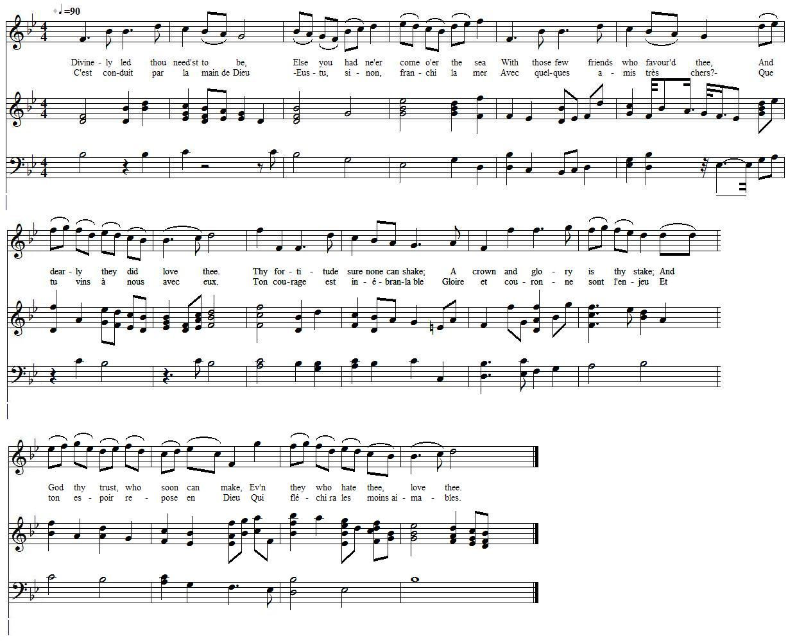

Divinely led thou need'st to be
Conduit par la main de Dieu
From "The True Loyalist", page 20, 1779
Composed in the hopeful period between the Battle of Prestonpans (Gladsmuir) and the retreat from Derby
Composé entre la bataille de Prestonpans (Gladsmuir) et la retraite de Derby
Tune - Mélodie
"Ann (Gin) thou wert mine ain thing"
from "The Beggar's Opera N°17 (1728)
Arrangement by Frederic Austin (1920)
Sequenced by Christian Souchon

|
To the tune:
This Scottish air is set to the duet (Polly and Macheath) "Oh! what pain it is to part!" in John Gay's "The Beggar's Opera" (1728, arrangement N°17 in Frederic Austin's version, 1920). It first appears under the title "An thou were my ain thing" in "Orpheus Caledonius" (1725-6). William Thomson, in his first edition of Orpheus Caledonius, credits the tune to David Rizzio (Queen Mary's secretary and a lutenist and singer of repute), but not in his second edition in 1733. The air is also to be found in McGibbon's "Scots Tunes", book III, 1762, pg. 83. |
A propos de la mélodie:
Cet air écossais accompagne le duo entre Polly et Macheath, intitulé "Se séparer, quelle douleur!", dans "l'Opéra du Gueux" de John Gay (1728, arrangement N°17 dans la version de Frederic Austin de 1920). Il apparaît d'abord sous le titre "Si tu m'appartenais" dans l'Orphée de Calédonie" (1725-6) de William Thomson qui, dans la première édition du recueil, l'attribue à David Rizzio , le secrétaire de la reine Marie, qui fut aussi un éminent luthiste et chanteur. Cette attribution ne figure plus dans la seconde édition de 1733. L'air figure également parmi les "Mélodies écossaises" de McGibbon, livre III, 1762, p. 83. |

|
DIVINELY LED THOU NEED'ST TO BE
1. Divinely led thou need'st to be, Else you had ne'er come o'er the sea With those few friends who favour'd thee, And dearly they did love thee. 2. Thy fortitude sure none can shake; A crown and glory is thy stake; And God thy trust, who soon can make, Ev'n they who hate thee, love thee. 3. Fame shall reward thy clemency, Whilst Gladsmuir-green is near the sea; And the triumphant victory Gain'd by the Clans that lov'd thee. 4. Go on, great P[rinc]e, ne'er fear thy foes, Though hellish plots thet do compose; The gods themselves to them oppose, And smile on those who love thee. 5. Thy great ancestors do look down With joy to see themselves outdone By a young Hero of their own, Begetting who's most lovely. 6. O happy Scotland! shall thou be When Royal J[ame]s reigns over thee, And C[harle]s, our P[rinc]e, who favours thee, And dearly ay will love thee. Source: "The True Loyalist; or, Chevaliers's Favourite: being a collection of elegant songs, never before printed. Also several other loyal compositions, wrote by eminent hands." Printed in the year 1779. |
C'EST CONDUIT PAR LA MAIN DE DIEU
1. C'est conduit par la main de Dieu - Eusses-tu, sinon, pris la mer Avec quelques amis très chers? - Que tu parvins jusqu'à ces lieux. 2. Ton courage est inébranlable. Gloire et couronne sont l'enjeu Et ton espoir repose en Dieu Qui fléchira les moins aimables. 3. La clémence est prix de la gloire. Le rivage est près de Gladsmuir Où des clans se sont unis pour T'offrir et triomphe et victoire. 4. Prince, ne crains pas l'adversaire. De ses complots ne fais point cas: Les dieux ne les approuvent pas. Ce sont tes amis qu'ils préfèrent. 5. Du haut du ciel tes grands ancêtres Voient avec joie tous tes hauts faits, Heureux d'être enfin surpassés Par ce héros qu'ils ont fait naître. 6. Ecosse, heureuse seras-tu, Quand Jacques brandira ton sceptre Et que Charles fera paraître Quel royaume il aime le plus! (Trad. Christian Souchon (c) 2011) |